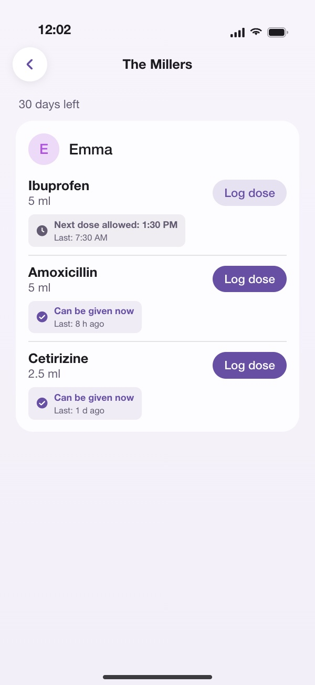

Os remédios e o dia de cada criança, em uma lista.
Para creches, amas e avós que cuidam de crianças de outras famílias. Veja o que está pendente, registe doses, refeições e sestas e os pais veem logo.

- Grátis para uma família
- Sem anúncios, nunca
- Nada salvo no seu celular
- 10 idiomas
Saiba o que está na hora antes de dar.
Para cada criança, veja cada remédio com quando foi dada a última dose, em casa ou por você, e quando a próxima é permitida.
- O horário da última dose, mesmo uma dada em casa hoje de manhã
- Um aviso antes de uma dose cedo demais
- Registre uma dose com um toque, e os pais veem na hora

Os pais acompanham o dia antes de ir buscar.
Cada refeição, sesta, fralda e temperatura que regista aparece no Início dos pais numa linha do tempo clara — sem papéis no fim do dia.
- “Hoje na” sua creche na tela inicial, e o dia como uma linha do tempo
- “Registrado por” em cada dose, temperatura, sintoma e medida de crescimento
- Os pais controlam quais crianças vê e quando o acesso termina
Registre o dia inteiro, com um ou dois toques
Cada registro é salvo com o horário, e os pais veem na tela inicial na hora.
Doses
Cada remédio da criança, conferido com a última dose da família.
Temperatura & sintomas
Em °C ou °F, com o nível de febre, e sintomas numa escala de 1 a 5 com notas.
Refeições & bebidas
Quanto comeu, de nada a tudo, e mamadeiras ou copos em ml.
Sonecas
Toque quando dormir e de novo quando acordar.
Fraldas & penico
Molhada, suja ou as duas, e acertos ou escapes no penico.
Humor, crescimento e notas
Registe humor, peso e altura, ou adicione uma nota rápida para os pais.
Como as famílias se conectam com você
Os pais ficam no controle: escolhem as crianças e por quanto tempo você as vê.
-
Configure sua creche
Mude para o modo creche e escolha o nome e o nome de usuário da sua creche. Os pais veem isso, nunca sua conta pessoal.
-
As famílias convidam você
Mostre seu QR code na entrada, ou passe aos pais seu nome de usuário. Eles escolhem as crianças e por quanto tempo.
-
Aceite e comece a registrar
Cada família aparece na sua lista, só com as crianças que escolheu.
- As famílias nunca se misturam. O modo creche lê ao vivo e não guarda nada de uma família no seu celular.
- Seu próprio histórico. Tudo o que você registrou, para cada família, mesmo depois que o acesso termina.
- Também é pai ou mãe? Uma conta faz as duas coisas. Alterne entre o modo creche e sua família pelo título no topo.
Grátis para uma família. Parenty Creche para muitas.
Comece grátis com a primeira família que convidar você. Assine quando mais famílias chegarem.
Grátis
Para uma família
- Uma família, convidada por um pai ou mãe com Premium
- Registre remédios, temperaturas, sintomas, crescimento e cuidados do dia
- Nome, nome de usuário e QR code próprios para sua creche
- Um histórico de tudo o que você registrou
Parenty Creche
€ 9,99 por mês ou € 99,99 por ano
- Tudo do Grátis
- Quantas famílias você cuidar
- Premium para a sua família, incluído
Já tem Premium? O Parenty Creche o substitui, então você não paga duas vezes.
O app mostra os preços na sua moeda local.
Perguntas de creches
Como começo o modo creche?
Crie uma conta grátis no Parenty, toque no título no topo da tela e escolha Modo creche, ou vá em Ajustes → Modo do app. Configure o nome e o nome de usuário da sua creche, e está pronto para a primeira família.
Como os pais me convidam?
Pais com Premium vão em Ajustes → Conta → Acesso de creche e digitam o nome de usuário da sua creche, ou escaneiam o QR code que você mostra no modo creche. Você aceita o convite, e a família aparece na sua lista.
O que eu vejo de uma família?
Só as crianças que os pais escolheram e os remédios delas, com quando foi dada a última dose e quando a próxima é permitida. Você não vê os registros da própria família, consultas, relatórios ou notas, e não pode alterar os remédios ou as crianças.
O que acontece quando o acesso termina?
O acesso termina na data que os pais escolheram, ou quando eles encerram, e a família sai da sua lista. Se o Premium da família acabar, o acesso fica pausado até voltar. Tudo o que você registrou fica no seu histórico.
Posso continuar usando o Parenty para a minha família?
Sim. Uma conta faz as duas coisas. Alterne entre o modo creche e sua família pelo título no topo da tela. O Parenty Creche inclui Premium para a sua família.
Ainda precisa de ajuda? Escreva para info@parenty.uk
O dia de cada família, em uma lista.
Download gratuito para iPhone e Android.